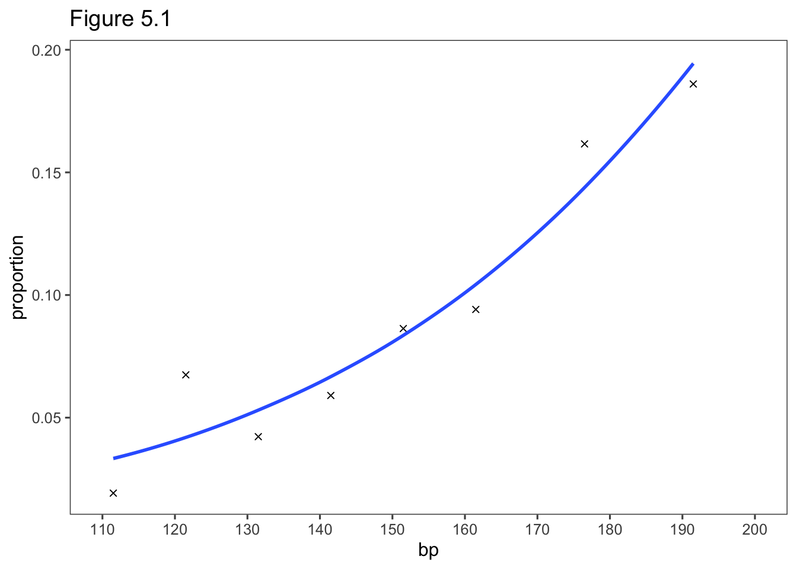
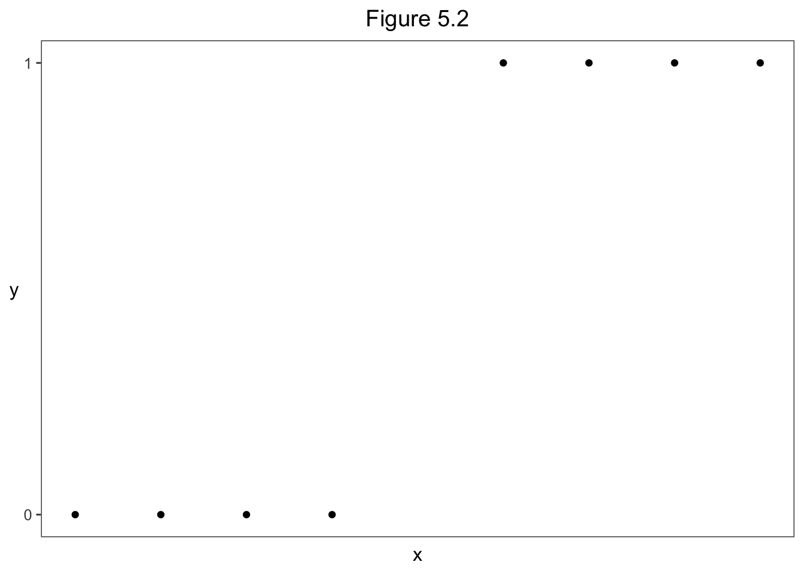

5 Building and Applying Logistic Regression Models
5.1 Strategies in Model Selection
5.1.1 How Many Explanatory Variables Can the Model Handle?
5.1.2 Example: Horseshoe Crab Satellites Revisited
\[\mathrm{logit}[P(Y=1)] = \alpha + \beta_1 weight + \beta_2 width + \beta_3 c_2 + \beta_4 c_3 + \beta_5 c_4 + \beta_6 s_2 + \beta_7 s_3\]
Crabs <- read.table("http://users.stat.ufl.edu/~aa/cat/data/Crabs.dat",
header = TRUE, stringsAsFactors = TRUE
)
fit <- glm(y ~ weight + width + factor(color) + factor(spine),
family = binomial, data = Crabs
)
summary(fit)
Call:
glm(formula = y ~ weight + width + factor(color) + factor(spine),
family = binomial, data = Crabs)
Deviance Residuals:
Min 1Q Median 3Q Max
-2.1977 -0.9424 0.4849 0.8491 2.1198
Coefficients:
Estimate Std. Error z value Pr(>|z|)
(Intercept) -8.06501 3.92855 -2.053 0.0401 *
weight 0.82578 0.70383 1.173 0.2407
width 0.26313 0.19530 1.347 0.1779
factor(color)2 -0.10290 0.78259 -0.131 0.8954
factor(color)3 -0.48886 0.85312 -0.573 0.5666
factor(color)4 -1.60867 0.93553 -1.720 0.0855 .
factor(spine)2 -0.09598 0.70337 -0.136 0.8915
factor(spine)3 0.40029 0.50270 0.796 0.4259
---
Signif. codes: 0 '***' 0.001 '**' 0.01 '*' 0.05 '.' 0.1 ' ' 1
(Dispersion parameter for binomial family taken to be 1)
Null deviance: 225.76 on 172 degrees of freedom
Residual deviance: 185.20 on 165 degrees of freedom
AIC: 201.2
Number of Fisher Scoring iterations: 4[1] "0.00000098"Analysis of Deviance Table (Type II tests)
Response: y
LR Chisq Df Pr(>Chisq)
weight 1.4099 1 0.23507
width 1.7968 1 0.18010
factor(color) 7.5958 3 0.05515 .
factor(spine) 1.0091 2 0.60377
---
Signif. codes: 0 '***' 0.001 '**' 0.01 '*' 0.05 '.' 0.1 ' ' 15.1.3 Stepwise Variable Selection Algorithms
5.1.4 Surposeful Selection of Explanatory Variables
5.1.5 Example: Variable Selection for Horseshoe Crabs
5.1.6 AIC and the Bias/Variance Tradeoff
\[\mathrm{AIC = -2(log\ likelihood) + 2(number\ of\ parameters\ in\ model).}\]
Crabs <- read.table("http://users.stat.ufl.edu/~aa/cat/data/Crabs.dat",
header = TRUE, stringsAsFactors = TRUE
)
fit <- glm(y ~ width + factor(color), family = binomial, data = Crabs)
-2*logLik(fit)'log Lik.' 187.457 (df=5)[1] 197.457fit <- glm(y ~ width + factor(color) + factor(spine),
family = binomial, data = Crabs)
library(MASS)
stepAIC(fit)Start: AIC=200.61
y ~ width + factor(color) + factor(spine)
Df Deviance AIC
- factor(spine) 2 187.46 197.46
<none> 186.61 200.61
- factor(color) 3 194.43 202.43
- width 1 208.83 220.83
Step: AIC=197.46
y ~ width + factor(color)
Df Deviance AIC
<none> 187.46 197.46
- factor(color) 3 194.45 198.45
- width 1 212.06 220.06
Call: glm(formula = y ~ width + factor(color), family = binomial, data = Crabs)
Coefficients:
(Intercept) width factor(color)2 factor(color)3 factor(color)4
-11.38519 0.46796 0.07242 -0.22380 -1.32992
Degrees of Freedom: 172 Total (i.e. Null); 168 Residual
Null Deviance: 225.8
Residual Deviance: 187.5 AIC: 197.5library(tidyverse)
# need response variable in last column of data file
Crabs2 <- Crabs %>%
select(weight, width, color, spine, y)
library(leaps)
library(bestglm)
bestglm(Crabs2, family = binomial, IC = "AIC") # can also use IC="BIC"Morgan-Tatar search since family is non-gaussian.AIC
BICq equivalent for q in (0.477740316103793, 0.876695783647898)
Best Model:
Estimate Std. Error z value Pr(>|z|)
(Intercept) -10.0708390 2.8068339 -3.587971 3.332611e-04
width 0.4583097 0.1040181 4.406056 1.052696e-05
color -0.5090467 0.2236817 -2.275763 2.286018e-025.2 Model Checking
5.2.1 Goodness of Fit: Model Comparison Using the Deviance
\[G^2 = 2\sum\mathrm{observed[log(observed/fitted)]}\]
5.2.2 Example: Goodness of Fit for Marijuana Use Survey
library(tidyverse)
Marijuana <- read.table("http://users.stat.ufl.edu/~aa/cat/data/Marijuana.dat",
header = TRUE, stringsAsFactors = TRUE)
Marijuana race gender yes no
1 white female 420 620
2 white male 483 579
3 other female 25 55
4 other male 32 62fit <- glm(yes/(yes+no) ~ gender + race, weights = yes + no, family = binomial,
data = Marijuana)
summary(fit) # deviance info is extracted on the next two lines
Call:
glm(formula = yes/(yes + no) ~ gender + race, family = binomial,
data = Marijuana, weights = yes + no)
Deviance Residuals:
1 2 3 4
-0.04513 0.04402 0.17321 -0.15493
Coefficients:
Estimate Std. Error z value Pr(>|z|)
(Intercept) -0.83035 0.16854 -4.927 8.37e-07 ***
gendermale 0.20261 0.08519 2.378 0.01739 *
racewhite 0.44374 0.16766 2.647 0.00813 **
---
Signif. codes: 0 '***' 0.001 '**' 0.01 '*' 0.05 '.' 0.1 ' ' 1
(Dispersion parameter for binomial family taken to be 1)
Null deviance: 12.752784 on 3 degrees of freedom
Residual deviance: 0.057982 on 1 degrees of freedom
AIC: 30.414
Number of Fisher Scoring iterations: 3[1] 0.05798151[1] 1[1] 0.8097152 1 2 3 4
0.4045330 0.4541297 0.3035713 0.3480244 library(dplyr)
Marijuana %>%
mutate(fit.yes = (yes+no)*fitted(fit)) %>%
mutate(fit.no = (yes+no)*(1-fitted(fit))) %>%
select(race, gender, yes, fit.yes, no, fit.no) race gender yes fit.yes no fit.no
1 white female 420 420.71429 620 619.28571
2 white male 483 482.28571 579 579.71429
3 other female 25 24.28571 55 55.71429
4 other male 32 32.71429 62 61.285715.2.3 Goodness of Fit: Grouped versus Ungrouped Data and Continuous Predictors
5.2.4 Residuals for Logistic Models with Categorical Predictors
\[\mathrm{Standardized\ residual} = \frac{y_i-n_i\hat\pi_i}{SE}.\] ### 5.2.5 Example: Graduate Admissoins at University of Florida
library(tidyverse)
Admissions <- read.table("http://users.stat.ufl.edu/~aa/cat/data/Admissions.dat",
header = TRUE, stringsAsFactors = TRUE)
theModel <- glm(yes/(yes+no) ~ department, family = binomial,
data = Admissions,
weights = yes+no)
theResiduals <- tibble(`Std. Res.` = rstandard(theModel, type = "pearson")) %>%
mutate(`Std. Res.` = round(`Std. Res.`, 2)) %>%
dplyr::filter(row_number() %% 2 == 0) # every other record is female
theTable <- Admissions %>%
mutate(gender = case_when(gender == 1 ~ "Female",
gender == 0 ~ "Male")) %>%
pivot_wider(id_cols = department, names_from = gender,
values_from = c(yes, no), names_sep = "") %>%
select(department, yesFemale, noFemale, yesMale, noMale) %>%
rename("Dept" = department, "Females (Yes)" = yesFemale, "Females (No)" =
noFemale, "Males (Yes)" = yesMale, "Males (No)" = noMale) %>%
bind_cols(theResiduals)
knitr::kable(theTable)| Dept | Females (Yes) | Females (No) | Males (Yes) | Males (No) | Std. Res. |
|---|---|---|---|---|---|
| anthropol | 32 | 81 | 21 | 41 | -0.76 |
| astronomy | 6 | 0 | 3 | 8 | 2.87 |
| chemistry | 12 | 43 | 34 | 110 | -0.27 |
| classics | 3 | 1 | 4 | 0 | -1.07 |
| communicat | 52 | 149 | 5 | 10 | -0.63 |
| computersci | 8 | 7 | 6 | 12 | 1.16 |
| english | 35 | 100 | 30 | 112 | 0.94 |
| geography | 9 | 1 | 11 | 11 | 2.17 |
| geology | 6 | 3 | 15 | 6 | -0.26 |
| germanic | 17 | 0 | 4 | 1 | 1.89 |
| history | 9 | 9 | 21 | 19 | -0.18 |
| latinamer | 26 | 7 | 25 | 16 | 1.65 |
| linguistics | 21 | 10 | 7 | 8 | 1.37 |
| mathematics | 25 | 18 | 31 | 37 | 1.29 |
| philosophy | 3 | 0 | 9 | 6 | 1.34 |
| physics | 10 | 11 | 25 | 53 | 1.32 |
| polisci | 25 | 34 | 39 | 49 | -0.23 |
| psychology | 2 | 123 | 4 | 41 | -2.27 |
| religion | 3 | 3 | 0 | 2 | 1.26 |
| romancelang | 29 | 13 | 6 | 3 | 0.14 |
| sociology | 16 | 33 | 7 | 17 | 0.30 |
| statistics | 23 | 9 | 36 | 14 | -0.01 |
| zoology | 4 | 62 | 10 | 54 | -1.76 |
\[logit(\pi_{ik}) = \alpha + \beta_k.\]
5.2.6 Standardized versus Pearson and Deviance Residuals
fit <- glm(yes/(yes+no) ~ gender + race, weights = yes + no, family = binomial,
data = Marijuana)
summary(fit)
Call:
glm(formula = yes/(yes + no) ~ gender + race, family = binomial,
data = Marijuana, weights = yes + no)
Deviance Residuals:
1 2 3 4
-0.04513 0.04402 0.17321 -0.15493
Coefficients:
Estimate Std. Error z value Pr(>|z|)
(Intercept) -0.83035 0.16854 -4.927 8.37e-07 ***
gendermale 0.20261 0.08519 2.378 0.01739 *
racewhite 0.44374 0.16766 2.647 0.00813 **
---
Signif. codes: 0 '***' 0.001 '**' 0.01 '*' 0.05 '.' 0.1 ' ' 1
(Dispersion parameter for binomial family taken to be 1)
Null deviance: 12.752784 on 3 degrees of freedom
Residual deviance: 0.057982 on 1 degrees of freedom
AIC: 30.414
Number of Fisher Scoring iterations: 3knitr::kable(
bind_cols(Standardized = rstandard(fit, type = "pearson"),
Pearson = residuals(fit, type = "pearson"),
deviance = residuals(fit, type = "deviance"),
`std dev.` = rstandard(fit, type = "deviance"),
Race = Marijuana$race, Gender = Marijuana$gender) %>%
mutate_if(is.numeric, round, digits = 3)
)| Standardized | Pearson | deviance | std dev. | Race | Gender |
|---|---|---|---|---|---|
| -0.241 | -0.045 | -0.045 | -0.241 | white | female |
| 0.241 | 0.044 | 0.044 | 0.241 | white | male |
| 0.241 | 0.174 | 0.173 | 0.240 | other | female |
| -0.241 | -0.155 | -0.155 | -0.241 | other | male |
5.2.7 Influence Diagnostics for Logistic Regression
5.2.8 Example: Heart Disease and Blood Pressure
HeartBP <- read.table("http://users.stat.ufl.edu/~aa/cat/data/HeartBP.dat",
header = TRUE, stringsAsFactors = TRUE)
theModel <- glm(y/n ~ bp, family = binomial, data = HeartBP, weights = n)
summary(theModel)
Call:
glm(formula = y/n ~ bp, family = binomial, data = HeartBP, weights = n)
Deviance Residuals:
Min 1Q Median 3Q Max
-1.0617 -0.5977 -0.2245 0.2140 1.8501
Coefficients:
Estimate Std. Error z value Pr(>|z|)
(Intercept) -6.082033 0.724320 -8.397 < 2e-16 ***
bp 0.024338 0.004843 5.025 5.03e-07 ***
---
Signif. codes: 0 '***' 0.001 '**' 0.01 '*' 0.05 '.' 0.1 ' ' 1
(Dispersion parameter for binomial family taken to be 1)
Null deviance: 30.0226 on 7 degrees of freedom
Residual deviance: 5.9092 on 6 degrees of freedom
AIC: 42.61
Number of Fisher Scoring iterations: 4predicted <- round(fitted(theModel)* HeartBP$n, 1)
std_res <- round(rstandard(theModel, type = "pearson"),2)
#influence.measures(theModel)
rDfbeta <- data.frame(dfbetas(theModel)) %>%
select(bp) %>%
transmute(DFbeta = round(bp, 2))
HeartBP %>%
rename("Blood Presure" = bp,
"Sample size" = n,
"Observed Disease" = y) %>%
bind_cols("Fitted Disease" = predicted,
"Standardized Residual" = std_res,
"Dfbeta (not SAS)" = rDfbeta) Blood Presure Sample size Observed Disease Fitted Disease
1 111.5 156 3 5.2
2 121.5 252 17 10.6
3 131.5 284 12 15.1
4 141.5 271 16 18.1
5 151.5 139 12 11.6
6 161.5 85 8 8.9
7 176.5 99 16 14.2
8 191.5 43 8 8.4
Standardized Residual DFbeta
1 -1.11 0.56
2 2.37 -2.24
3 -0.95 0.34
4 -0.57 0.08
5 0.13 0.01
6 -0.33 -0.06
7 0.65 0.38
8 -0.18 -0.11library(ggthemes)
predicted <- predict(theModel, type = "response")
HeartBP %>%
mutate(proportion=y/n) %>%
ggplot(aes(x= bp, y = proportion)) +
geom_point(shape = 4) +
geom_smooth(aes(y = predicted)) +
theme_few() +
scale_x_continuous(breaks = seq(110, 200, by = 10), limits = c(110, 200)) +
ggtitle("Figure 5.1")`geom_smooth()` using method = 'loess' and formula 'y ~ x'
5.3 Infinite Estimates in Logistic Regression
5.3.1 Complete and Quasi-Complete Separation: Perfeect Discrination
library(tidyverse)
library(ggthemes)
data.frame (x = c(10, 20, 30, 40, 60, 70, 80, 90),
y = c(0, 0, 0, 0, 1, 1, 1, 1)) %>%
ggplot(aes(x = x, y = y)) +
geom_point() +
theme_few() +
ggtitle("Figure 5.2") +
scale_y_continuous(breaks = c(0,1)) +
theme(axis.text.x = element_blank(),
axis.ticks.x = element_blank(),
axis.title.y = element_text(angle = 0, vjust = 0.5),
plot.title = element_text(hjust = 0.5)) 
5.3.2 Example: Infinite Estimate for Toy Example
x <- c(10, 20, 30, 40, 60, 70, 80, 90)
y <- c(0, 0, 0, 0, 1, 1, 1, 1)
fit <- glm(y ~ x, family = binomial)Warning: glm.fit: fitted probabilities numerically 0 or 1 occurred# P-value for Wald test of H0: beta = 0
# res deviance = 0 means perfect fit
# Fisher iterations: 25 shows very slow convergence
summary(fit)
Call:
glm(formula = y ~ x, family = binomial)
Deviance Residuals:
Min 1Q Median 3Q Max
-1.045e-05 -2.110e-08 0.000e+00 2.110e-08 1.045e-05
Coefficients:
Estimate Std. Error z value Pr(>|z|)
(Intercept) -118.158 296046.187 0 1
x 2.363 5805.939 0 1
(Dispersion parameter for binomial family taken to be 1)
Null deviance: 1.1090e+01 on 7 degrees of freedom
Residual deviance: 2.1827e-10 on 6 degrees of freedom
AIC: 4
Number of Fisher Scoring iterations: 25'log Lik.' -1.09134e-10 (df=2)#library(car)
# P-value for likelihood-ratio test of beta = 0 is more sensitive than p-value of 1 for Wald test
car::Anova(fit)Analysis of Deviance Table (Type II tests)
Response: y
LR Chisq Df Pr(>Chisq)
x 11.09 1 0.0008678 ***
---
Signif. codes: 0 '***' 0.001 '**' 0.01 '*' 0.05 '.' 0.1 ' ' 1library(profileModel) # ordinary confint function fails for infinite estimates
confintModel(fit, objective = "ordinaryDeviance", method = "zoom")Preliminary iteration .. Done
Profiling for parameter (Intercept) ... Done
Profiling for parameter x ... Done
Zooming for parameter (Intercept) ...
Zooming for parameter x ... Lower Upper
(Intercept) -Inf -2.66963
x 0.05876605 Inf
attr(,"fitted object")
fit5.3.3 Sparse Data and Infinite Effects with Categorical Predictors
5.3.4 Example: Risk Factors for Endometrial Cancer Grade
library(tidyverse)
Endo <- read.table("http://users.stat.ufl.edu/~aa/cat/data/Endometrial.dat",
header = TRUE, stringsAsFactors = TRUE)
Endo %>%
filter(row_number() %in% c(1, 2, n())) NV PI EH HG
1 0 13 1.64 0
2 0 16 2.26 0
3 0 33 0.85 1 HG
NV 0 1
0 49 17
1 0 13fit <- glm(HG ~ NV + PI + EH, family = binomial, data = Endo)
# NV's true estimate is infinity
summary(fit)
Call:
glm(formula = HG ~ NV + PI + EH, family = binomial, data = Endo)
Deviance Residuals:
Min 1Q Median 3Q Max
-1.50137 -0.64108 -0.29432 0.00016 2.72777
Coefficients:
Estimate Std. Error z value Pr(>|z|)
(Intercept) 4.30452 1.63730 2.629 0.008563 **
NV 18.18556 1715.75089 0.011 0.991543
PI -0.04218 0.04433 -0.952 0.341333
EH -2.90261 0.84555 -3.433 0.000597 ***
---
Signif. codes: 0 '***' 0.001 '**' 0.01 '*' 0.05 '.' 0.1 ' ' 1
(Dispersion parameter for binomial family taken to be 1)
Null deviance: 104.903 on 78 degrees of freedom
Residual deviance: 55.393 on 75 degrees of freedom
AIC: 63.393
Number of Fisher Scoring iterations: 17'log Lik.' -27.69663 (df=4)Analysis of Deviance Table (Type II tests)
Response: HG
LR Chisq Df Pr(>Chisq)
NV 9.3576 1 0.002221 **
PI 0.9851 1 0.320934
EH 19.7606 1 8.777e-06 ***
---
Signif. codes: 0 '***' 0.001 '**' 0.01 '*' 0.05 '.' 0.1 ' ' 1library(profileModel) # ordinary confint function fails for infinite est
confintModel(fit, objective = "ordinaryDeviance", method = "zoom") # 95% profile likelihood CI for beta 1 Preliminary iteration .... Done
Profiling for parameter (Intercept) ... Done
Profiling for parameter NV ... Done
Profiling for parameter PI ... Done
Profiling for parameter EH ... Done
Zooming for parameter (Intercept) ...
Zooming for parameter NV ...
Zooming for parameter PI ...
Zooming for parameter EH ... Lower Upper
(Intercept) 1.4290183 7.94717425
NV 1.2856920 Inf
PI -0.1370717 0.03810556
EH -4.7866976 -1.43682244
attr(,"fitted object")
fitlibrary(detectseparation) # new package
# 0 denotes finite est, Inf denotes infinite est.
glm(HG ~ NV + PI + EH, family = binomial, data = Endo, method = "detectSeparation")Implementation: ROI | Solver: lpsolve
Separation: TRUE
Existence of maximum likelihood estimates
(Intercept) NV PI EH
0 Inf 0 0
0: finite value, Inf: infinity, -Inf: -infinity5.4 Bayesian Inference, Penalized Likelihood, and Conditional Likelihood for Logistic Regression *
5.4.1 Bayesian Modeling: Specification of Prior Distributions
5.4.2 Example: Risk Factors for Endometrial Caner Revisited
Endo2 <-
Endo %>%
mutate(PI2 = scale(PI),
EH2 = scale(EH),
NV2 = NV - 0.5)
fit.ML <- glm(HG ~ NV2 + PI2 + EH2, family = binomial, data = Endo2)
summary(fit.ML)
Call:
glm(formula = HG ~ NV2 + PI2 + EH2, family = binomial, data = Endo2)
Deviance Residuals:
Min 1Q Median 3Q Max
-1.50137 -0.64108 -0.29432 0.00016 2.72777
Coefficients:
Estimate Std. Error z value Pr(>|z|)
(Intercept) 7.8411 857.8755 0.009 0.992707
NV2 18.1856 1715.7509 0.011 0.991543
PI2 -0.4217 0.4432 -0.952 0.341333
EH2 -1.9219 0.5599 -3.433 0.000597 ***
---
Signif. codes: 0 '***' 0.001 '**' 0.01 '*' 0.05 '.' 0.1 ' ' 1
(Dispersion parameter for binomial family taken to be 1)
Null deviance: 104.903 on 78 degrees of freedom
Residual deviance: 55.393 on 75 degrees of freedom
AIC: 63.393
Number of Fisher Scoring iterations: 17Loading required package: coda##
## Markov Chain Monte Carlo Package (MCMCpack)## Copyright (C) 2003-2021 Andrew D. Martin, Kevin M. Quinn, and Jong Hee Park##
## Support provided by the U.S. National Science Foundation## (Grants SES-0350646 and SES-0350613)
##fitBayes <- MCMClogit(HG ~ NV2 + PI2 + EH2, mcmc = 100000, b0 = 0, B0 = 0.01,
data = Endo2) # prior var = 1/0.01 = 100, sd = 10
summary(fitBayes) # posterior deviation
Iterations = 1001:101000
Thinning interval = 1
Number of chains = 1
Sample size per chain = 1e+05
1. Empirical mean and standard deviation for each variable,
plus standard error of the mean:
Mean SD Naive SE Time-series SE
(Intercept) 3.2356 2.5948 0.008206 0.026682
NV2 9.1626 5.1639 0.016330 0.053109
PI2 -0.4711 0.4546 0.001437 0.006376
EH2 -2.1332 0.5879 0.001859 0.008450
2. Quantiles for each variable:
2.5% 25% 50% 75% 97.5%
(Intercept) -0.3391 1.2619 2.7161 4.6972 9.4865
NV2 2.1105 5.2437 8.1064 12.1133 21.6077
PI2 -1.4163 -0.7676 -0.4445 -0.1538 0.3538
EH2 -3.3781 -2.5087 -2.0977 -1.7227 -1.0786[1] 0.000165.4.3 Penalized Likelihood Reduces Bias in Logistic Regression
\[L^*(\beta) = L(\beta) - s(\beta),\]
5.4.4 Example: Risk Factors for Endometrial Cancer Revisited
library(logistf)
fit.penalized <- logistf(HG ~ NV2 + PI2 + EH2, family=binomial, data=Endo2)
options(digits = 4)
summary(fit.penalized)logistf(formula = HG ~ NV2 + PI2 + EH2, data = Endo2, family = binomial)
Model fitted by Penalized ML
Coefficients:
coef se(coef) lower 0.95 upper 0.95 Chisq p method
(Intercept) 0.3080 0.8006 -0.9755 2.7888 0.1690 6.810e-01 2
NV2 2.9293 1.5508 0.6097 7.8546 6.7985 9.124e-03 2
PI2 -0.3474 0.3957 -1.2443 0.4045 0.7468 3.875e-01 2
EH2 -1.7243 0.5138 -2.8903 -0.8162 17.7593 2.507e-05 2
Method: 1-Wald, 2-Profile penalized log-likelihood, 3-None
Likelihood ratio test=43.66 on 3 df, p=1.786e-09, n=79
Wald test = 17.48 on 3 df, p = 0.0005635.4.5 Conditional Likelihood and Conditional Logistic Regression
\[\mathrm{logit}[P(Y_{it} = 1)] = \alpha_i + \beta x_{it},\]
5.4.6 Conditional Logistic Regression and Exact Tests for Contingency Tables
5.5 Alternative Link Functions: Linear Probability and Probit Models *
5.5.1 Linar Probability Model
\[F(Y = 1) = \alpha + \beta_1 x_1 + \cdots + \beta_px_p,\]
5.5.2 Example: Political Ideology and Belief in Evolution
library(tidyverse)
Evo <- read.table("http://users.stat.ufl.edu/~aa/cat/data/Evolution2.dat",
header = TRUE, stringsAsFactors = TRUE)
Evo %>%
filter(row_number() %in% c(1, 2, n())) ideology evolved
1 1 1
2 1 1
3 7 0fit <- glm(evolved ~ ideology,
family=quasi(link=identity, variance = "mu(1-mu)"),
data = Evo)
summary(fit, dispersion = 1)
Call:
glm(formula = evolved ~ ideology, family = quasi(link = identity,
variance = "mu(1-mu)"), data = Evo)
Deviance Residuals:
Min 1Q Median 3Q Max
-2.0558 -1.2617 0.7247 1.0954 1.7440
Coefficients:
Estimate Std. Error z value Pr(>|z|)
(Intercept) 0.108437 0.038932 2.785 0.00535 **
ideology 0.110102 0.008971 12.273 < 2e-16 ***
---
Signif. codes: 0 '***' 0.001 '**' 0.01 '*' 0.05 '.' 0.1 ' ' 1
(Dispersion parameter for quasi family taken to be 1)
Null deviance: 1469.3 on 1063 degrees of freedom
Residual deviance: 1359.5 on 1062 degrees of freedom
AIC: NA
Number of Fisher Scoring iterations: 3
Call:
glm(formula = evolved ~ ideology, family = gaussian(link = identity),
data = Evo)
Deviance Residuals:
Min 1Q Median 3Q Max
-0.8819 -0.5492 0.2290 0.4508 0.7836
Coefficients:
Estimate Std. Error t value Pr(>|t|)
(Intercept) 0.10554 0.04272 2.47 0.0137 *
ideology 0.11091 0.01033 10.73 <2e-16 ***
---
Signif. codes: 0 '***' 0.001 '**' 0.01 '*' 0.05 '.' 0.1 ' ' 1
(Dispersion parameter for gaussian family taken to be 0.2247506)
Null deviance: 264.57 on 1063 degrees of freedom
Residual deviance: 238.69 on 1062 degrees of freedom
AIC: 1435.2
Number of Fisher Scoring iterations: 25.5.3 Probit Model and Normal Latent Variable Model
\[\mathrm{probit}[F(Y = 1)] = \alpha + \beta_1 x_1 + \cdots + \beta_px_p\]
\[y^* = \alpha + \beta_1 x_1+ \cdots + \beta_px_p + \epsilon.\]
5.5.4 Example: Snoring and Heart Disease Revisited
\[\mathrm{probit}[\hat P(Y = 1)] = -2.061 + 0.188x.\]
library(tidyverse)
Heart <- read.table("http://users.stat.ufl.edu/~aa/cat/data/Heart.dat",
header = TRUE, stringsAsFactors = TRUE)
Heart snoring yes no
1 never 24 1355
2 occasional 35 603
3 nearly_every_night 21 192
4 every_night 30 224# recode() is in dplyr and car...
Heart <- Heart %>%
mutate(snoringNights = dplyr::recode(snoring, never = 0, occasional = 2,
nearly_every_night = 4, every_night = 5))
fit <- glm(yes/(yes+no) ~ snoringNights, family = binomial(link = probit),
weights = yes+no, data = Heart)
summary(fit)
Call:
glm(formula = yes/(yes + no) ~ snoringNights, family = binomial(link = probit),
data = Heart, weights = yes + no)
Deviance Residuals:
1 2 3 4
-0.6188 1.0388 0.1684 -0.6175
Coefficients:
Estimate Std. Error z value Pr(>|z|)
(Intercept) -2.06055 0.07017 -29.367 < 2e-16 ***
snoringNights 0.18777 0.02348 7.997 1.28e-15 ***
---
Signif. codes: 0 '***' 0.001 '**' 0.01 '*' 0.05 '.' 0.1 ' ' 1
(Dispersion parameter for binomial family taken to be 1)
Null deviance: 65.9045 on 3 degrees of freedom
Residual deviance: 1.8716 on 2 degrees of freedom
AIC: 26.124
Number of Fisher Scoring iterations: 4 1 2 3 4
0.01967 0.04599 0.09519 0.13100